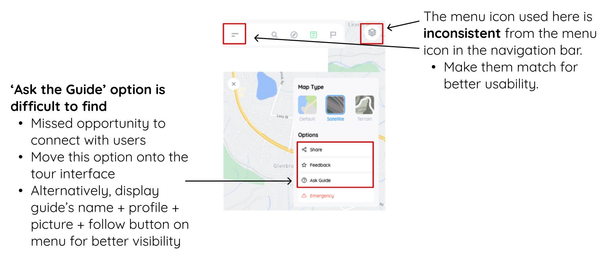
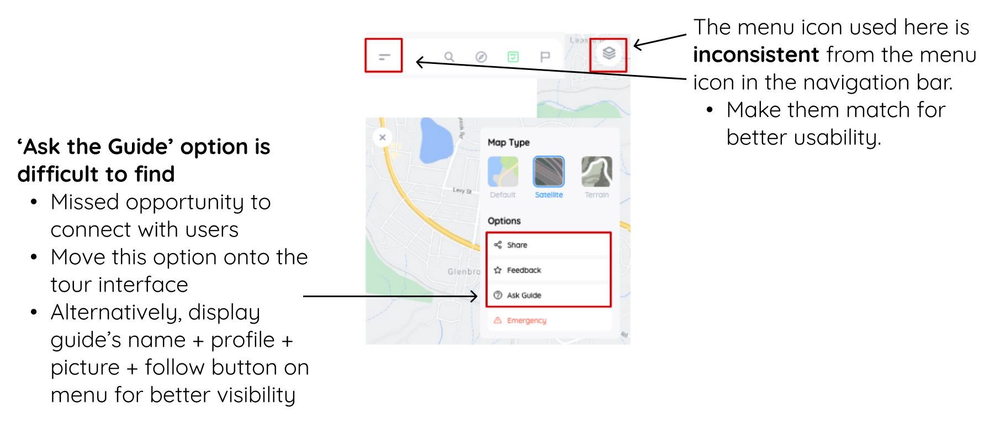

UI/UX Design
FreeGuides Walking Tours Mobile App Consultation
My Role: UX Analyst / Designer
Duration: August - October 2021
Skills: Wireframing, Prototyping, Evaluation
Tools: Figma, Google Spreadsheets
This experience was put together by DigiHub (now named Prodigi). Students that took part in DigiHub's Product Design Program could wove onto the Client Design Program, where students are split into teams and each team would work with a different client, like a pro-bono consulting team.
My team was assigned to work with FreeGuides, a peer-to-peer mobile platform that would allow users to create and try out self-guided tours. Our client contact was the FreeGuides founder, who we would have video meetings with every 2-3 weeks where we would update him on our work and progress, and he would provide feedback and suggestions.
Our team had 5 members, officially split into 1 project lead, 2 UX designers, and 2 business managers but we all were able to experience parts of the project that included analysis and evaluation, and prototyping. This project was conducted entirely online.
User Journeys
We were given access to FreeGuide's existing set of user personas, which I had gone over in order to understand the different possible motications and goals that potential users may have with using the app.
My team members created user journey maps, outlining the main user journeys that our team would be focusing on for the rest of the project.

Evaluation
From there, we were each assigned to explore the existing app with a focus on a specific user flow. Our team was to evaluate the design and experience using user experience heuristics and design principles as a guide for explaining our observations and suggestions.
Our team used FigJam files so that we could collaborate easily. I used sticky notes for my thoughts as I went through the user journey of an explorer user trying to start an experience. Arrows were used to show the progression and any related points.
Then I created an issues table to organise these thoughts into a more coherent evaluation. These tables were split into sections depending on whether I was evaluating something based on design principles or with UX heuristics.

Proposed Solutions
We created low to mid fidelity wireframes of our proposed solutions as a way of visually communicating our suggestions and improvements.
After running through our work with the company again, we started making Jira tickets so that some of the suggestions could be officially communicated to and implemented by the developers.
We needed to ensure that any suggestions we made were not only in line with their branding guide (e.g., using Quicksand fonts, the colour palette) but also accessibility wise it needed to be up to WCAG standards.
Our team collated a spreadsheet to organise everyone's contributions into a consistent format. This was also a chance to tidy up our evaluations, make our comments more succinct. To turn these into Jira tickets, our team was asked to submit each spreadsheet item on a webform.

Comparison Between Existing UI and Proposed UI
The next step was to do the evaluations that compared the design that was being used on the app at the time, with a UI prototype of a porposed design that was made by the company's original designer.
We were to determine what functionality or design is different between the two designs, and what parts were important for them to keep, again using design principles and heuristics as a guide for our reasoning. Below are some examples of comparison evaluations that I did for our 'Creating an Experience' user flow screens. For each comparable pair of screens, I noted the major differences in design, what I liked or didn't like, and any suggestions for improvement.

Social Features
In our final phase of the project, we were asked to provide suggestions for improvement when it came to the app's social features.
The platform relies on the users being able to interact and socialise with one another. Explorer users need the Guide users to make tour experiences that they can try in real life. Guide users want there to be Explorer users to actually use the tours they make. The more trust there is between users, the more likely that Explorers will donate or tip the Guides, and the Guides could be more incentivised to create more tour content. Thus it is important that social features are easily accessible across the app.
Another team member and I made the following comments and suggestions on how to encourage Explorers to 'interact' with the Guide of the tour experience that they are using.
 
